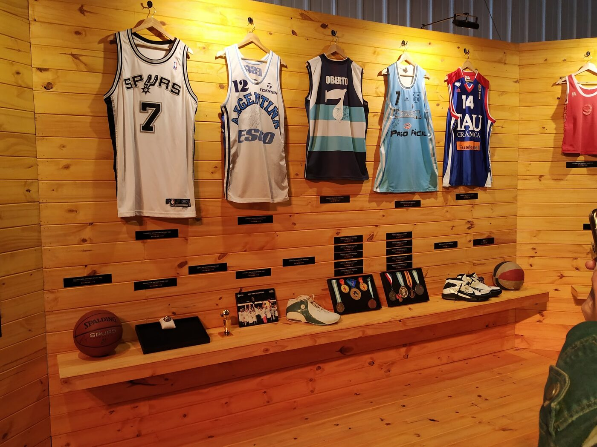
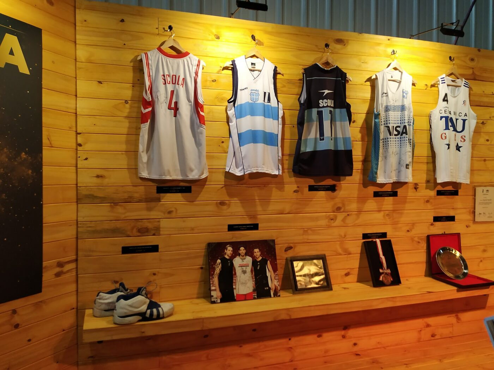
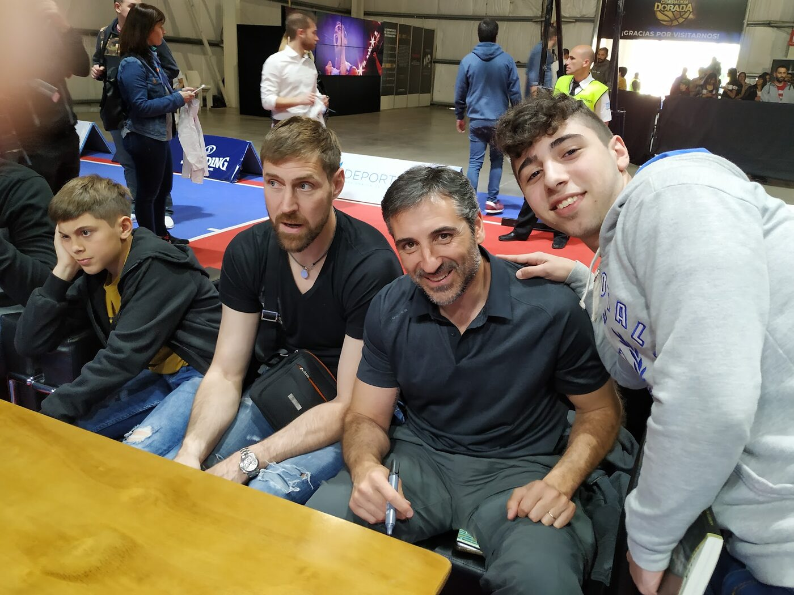
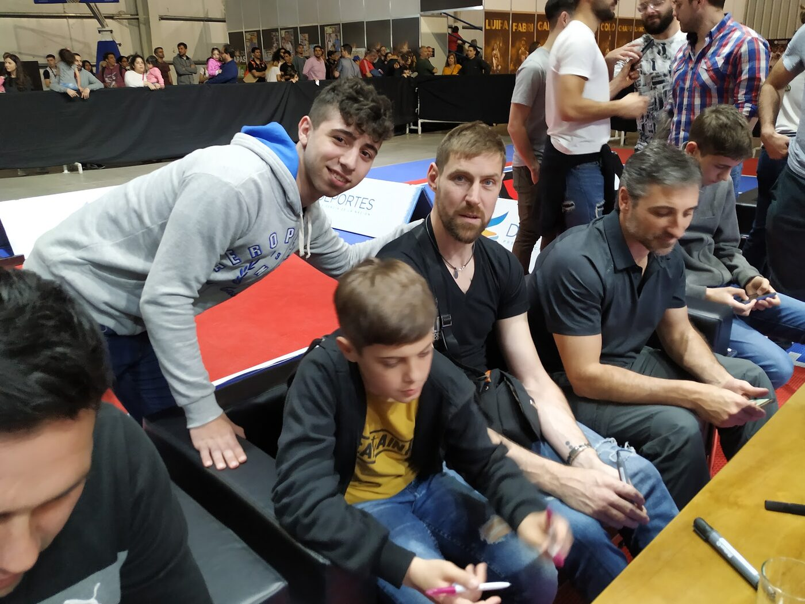
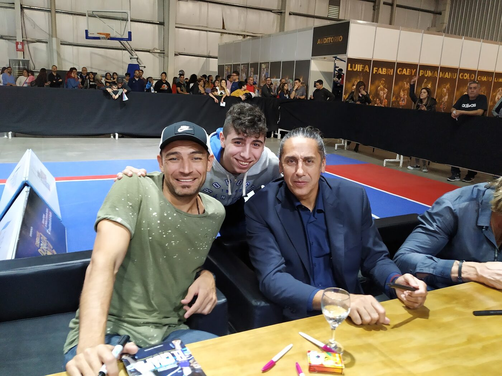
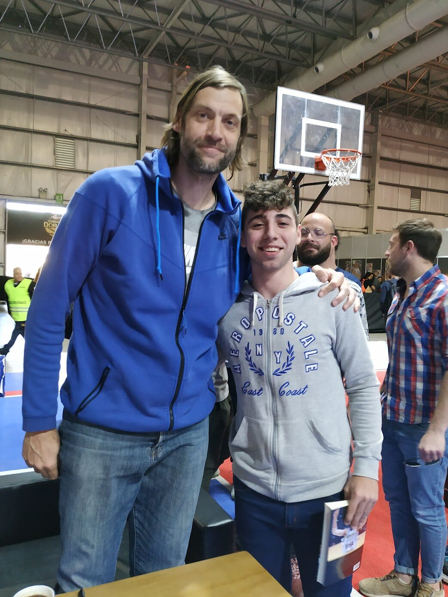
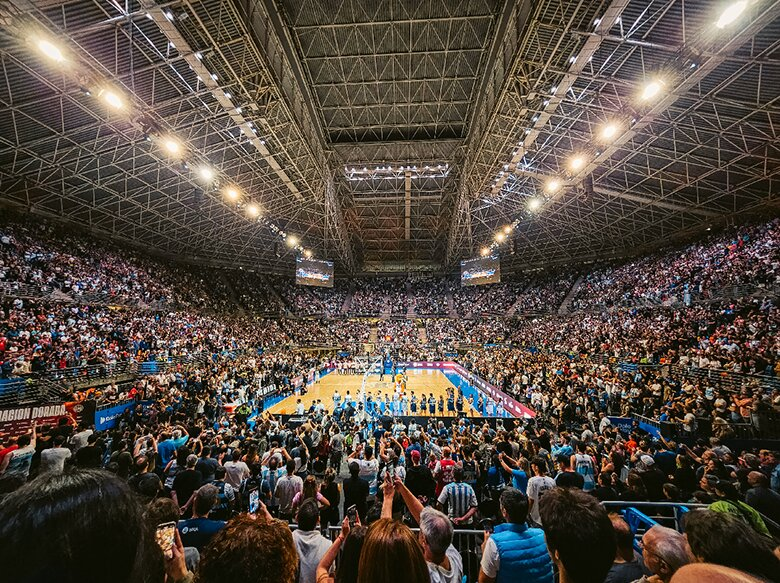

Galería
Fotos y video propios de los homenajes a la Generación Dorada a los que asistí: la exposición y el partido por los veinte años del oro.
Exposición homenaje



Con los jugadores




Partido homenaje, 2 de noviembre de 2024


